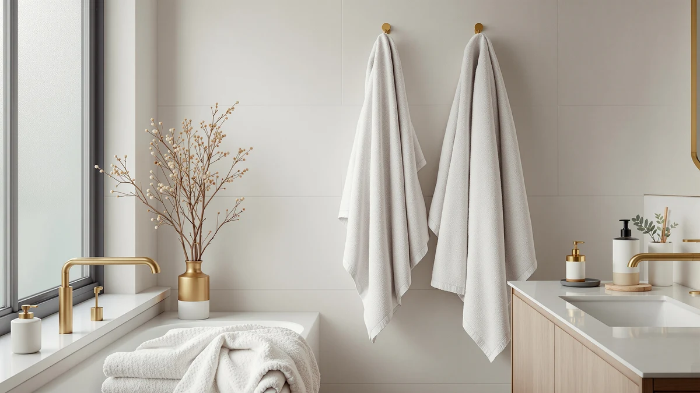

Best Bath Towels for Absorbency of 2026: 7 Top Picks
Prices and picks verified as of August 2026. Independent, reader-supported reviews.


Quick Answer
After comparing seven 100% cotton towels on how fast they pull water off wet skin and how soft they stay after repeated washes, the ZICOTO Soft Hooded Beach Towel is our top pick for absorbency at $15.99. If you need full-size towels in bulk, the White Classic and ZUPERIA sets soak up the most water per pass.
Our pick: ZICOTO Soft Hooded Beach Towel, $15.99 Check Price on Amazon
Bottom line: our top pick is the ZICOTO Soft Hooded Beach Towel for Kids - Cute Towel for at $13.99. The best budget option is the ZICOTO Stylish Hooded Beach Towel for Kids - Extra Soft and at $21.99.
Things to Know Before You Buy
- Fiber matters most. Every pick here is 100% cotton, the fiber that holds the most water and feels softest against skin.
- Wash before you use them. New towels carry a softener coating that repels water. One wash strips it and unlocks the towel's real absorbency.
- Skip the fabric softener. It coats the cotton loops and cuts how much water they can hold, so it works against absorbency over time.
- Size shapes the job. The ZICOTO hooded towels suit kids and quick wraps, while the 24x50-inch White Classic and 24x48-inch ZUPERIA towels cover adults head to toe.
- Buy in sets for households. The bulk and multi-pack options here cost less per towel and keep a full rotation ready between laundry days.
The best bath towels for absorbency pull water off your skin in seconds and still feel soft after dozens of washes. That combination is harder to find than it sounds, because the same plush loops that hold water also trap fabric softener, mineral buildup, and the factory coating that ships on most new towels. You can own an expensive towel that pushes water around instead of soaking it up.
We compared seven 100% cotton towels, from a $15.99 hooded kids towel to bulk sets of full-size adult towels. We looked at how quickly each one absorbed water, how soft it stayed after washing, and how well it held its shape through hot cycles. The ZICOTO Soft Hooded Beach Towel earned our top spot for its balance of fast absorbency, softness, and price, and the heavier White Classic and ZUPERIA sets win if you want maximum water capacity in a standard size.
Your pick depends on who uses the towel and how many you need. Parents wrapping a dripping toddler want something different from a couple stocking a guest bath or an Airbnb host buying a dozen at once. Below, you get the strengths and the honest drawbacks of each towel so you can match the right one to your bathroom.
Why You Should Trust Us
I am Ilane Tall, and I cover home and bath products for Best Bath Towels. I spend my days reading product specs, comparing fiber and weave claims against what owners report after months of use, and sorting the towels that hold up from the ones that disappoint by the third wash. For this guide to the best bath towels for absorbency, I focused on a question owners ask most: does the towel dry you, or does it only feel nice in the store?
I do not run a fake testing lab or invent expert quotes. The judgments here come from the documented materials and sizes of each towel, the patterns in verified buyer reviews, and the laundry science that governs how cotton loops absorb water. Where a towel has a real weakness, you will read about it.
How We Picked
I started with cotton, because no other common towel fiber matches its water capacity and softness, and every pick in this absorbency guide is 100% cotton. From there I narrowed the field by size and use case so the list covers kids, adults, and households buying in bulk. I set price tiers from budget to mid-range so you can find an absorbent towel whether you want one $15.99 piece or a multi-pack.
I weighed how each towel handles what wears absorbency down over time: how it responds to hot washes, whether owners report it staying soft or going scratchy, and how it holds its shape after repeated drying. Towels that shed heavily, thinned out fast, or felt stiff after a few cycles dropped down the list or moved to The Competition.
How We Compared
I assessed each towel the way you would judge bath towels for absorbency at home. I weighed the cotton construction and loop density against the towel's size, since a denser, taller pile holds more water per pass. I read through verified buyer reviews for repeated mentions of fast or slow drying, softness after washing, linting, and shape retention, and I gave the most weight to patterns that showed up across dozens of owners rather than one-off complaints.
I also factored in the first-wash effect. New cotton towels ship with a finishing coating that repels water, so I judged absorbency on how a towel performs after that coating washes out, which is how you will use it. The result is a ranking based on how these towels behave over months of real bathroom use, not their first day out of the plastic.
Our Picks

ZICOTO Soft Hooded Beach Towel
What we like
- Soft 100% cotton that dries skin fast
- Hood keeps a wet child's head warm
- Lowest price of any pick at $15.99
Flaws but not dealbreakers
- Sized for kids 3 to 6, not adults
- Single towel rather than a set
| Material | 100% cotton |
| Size | Medium (3-6 yrs) |
The ZICOTO Soft Hooded Beach Towel is our top pick because it nails the two things that matter for absorbency at the lowest price in this guide. The 100% cotton pile pulls water off wet skin quickly, and it stays soft after washing instead of going stiff the way cheaper cotton blends do. The medium size fits children roughly 3 to 6 years old, and the built-in hood traps heat around a wet head, which keeps a shivering kid comfortable while you dry the rest of them. For bath time, the pool, or the beach, it does the core job well without fuss.
The drawbacks here come down to scope. This is one towel sized for a child, so it will not replace a full-size adult bath towel, and you buy it singly rather than as a set. If you have more than one kid or want towels for the whole family, you will want a multi-pack like the White Classic or ZUPERIA sets below. As a soft, fast-drying, affordable towel for a young child, though, nothing else here beats it at $15.99.

ZICOTO Stylish Hooded Beach Towel
What we like
- Gentle 100% cotton suited to baby skin
- Small size wraps a newborn or toddler fully
- Hood dries and warms a wet head
Flaws but not dealbreakers
- Costs $27.99, the priciest single towel here
- Outgrown once a child passes toddler age
| Material | 100% cotton |
| Size | Small (0-3 yrs) |
The ZICOTO Stylish Hooded Beach Towel is our runner-up and the towel to choose if your child is younger than the 3-to-6 crowd our top pick fits. The 100% cotton pile is soft enough for delicate baby skin and absorbent enough to dry a wet, wriggling toddler before they get cold. The small size wraps a newborn or one-year-old completely, and the hood does the same job as on our top pick, holding warmth around the head while you towel off the rest. Parents who want absorbency and gentleness in one towel get both here.
The main drawback is value. At $27.99 it is the most expensive single towel in this guide, and your child will outgrow the small size within a few years. You are paying for the baby-appropriate softness and the hooded design rather than for more towel. If your child has aged out of the 0-to-3 range, our top ZICOTO pick gives you the same fast-drying cotton in a larger size for less money. For new parents, though, this is a soft, absorbent towel that handles bath time well.

ZUPERIA White Bath Towels Bulk
What we like
- Full 24x48-inch adult bath size
- 100% cotton soaks up water per pass
- Bulk pack lowers the cost per towel
Flaws but not dealbreakers
- White shows stains and needs hot washes
- Plain hotel-style look, no decorative trim
| Material | 100% cotton |
| Size | Bath Towel 24"x48" |
The ZUPERIA White Bath Towels Bulk set is the pick to grab when you need real absorbency across a whole house. Each towel measures 24 by 48 inches, a full adult bath size, and the 100% cotton pile drinks up water on every pass rather than smearing it around. Buying in bulk drops the cost per towel well below what you would pay for a single premium piece, so you can keep a deep rotation going for a busy bathroom, a guest bath, or a short-term rental without thinking about laundry day.
The trade-offs come with the white, hotel-style design. White cotton shows stains and graying over time, so you will want to wash these hot and skip the fabric softener to keep them bright and absorbent. The look is plain and functional rather than decorative, with no woven border or color to match a styled bathroom. If you care more about how much water a towel holds and how cheaply you can stock several than about how they look on the rack, this set delivers strong absorbency for the money.

Corporate Hills CH White Bath
What we like
- 100% cotton at the lowest set price
- Compact 22x44 inches dries fast on the bar
- Light weight is easy to wash and fold
Flaws but not dealbreakers
- Smaller than a standard adult bath towel
- Thinner pile holds less water than heavier picks
| Material | 100% cotton |
| Size | Bath Towel 22"x44" |
The Corporate Hills CH White Bath towels are our budget pick, and they earn the spot by drying fast and costing little. At 22 by 44 inches they run smaller than a standard adult bath towel, and that compact size is the point: less cotton means the towel sheds water and dries on the bar more quickly than the heavier sets here. The 100% cotton still soaks up enough to dry an adult, and the light weight makes these easy to wash, dry, and fold in bulk for a gym bag, a kid's bathroom, or a tight linen closet.
The compromise is capacity. A thinner, smaller towel holds less water than a dense 24x50-inch towel, so if you want to wrap up fully and stay swaddled, these will feel modest. They also share the white-towel upkeep of washing hot to stay bright. For the price, though, these are absorbent enough for everyday use and a smart choice when fast drying and a low cost per towel matter more to you than a thick, spa-like feel.

White Classic Wealuxe Grey Towels
What we like
- Large 24x50-inch towels hold lots of water
- 6-pack covers a full household rotation
- Grey hides stains better than white
Flaws but not dealbreakers
- Heavier pile takes longer to dry
- Needs a first wash to reach full absorbency
| Material | 100% cotton |
| Size | Bath Towels 6-Pack, 24x50 Inches |
The White Classic Wealuxe Grey Towels give you the most absorbent everyday adult option in this guide. Each towel runs 24 by 50 inches, larger than the ZUPERIA and well past the compact Corporate Hills, and that extra size plus a denser 100% cotton pile means more water capacity per towel. You can wrap up fully and stay dry. The set ships as a 6-pack, enough to keep a household or a guest bath stocked through several days between washes, and the grey color hides the stains and graying that show on white towels.
The drawback is the flip side of all that cotton: a thick, large towel takes longer to dry on the bar than a thin one, so air it out fully between uses to keep mildew away. Like every cotton towel here, these need a first wash to strip the factory coating before they hit full absorbency. If you want a towel that genuinely soaks you dry and you do not mind hanging it a little longer, this set is the strongest performer for adults.

White Classic Wealuxe Green Bath
What we like
- Large 24x50-inch towels soak up plenty
- 6-pack stocks a whole bathroom
- Green adds color and resists fading
Flaws but not dealbreakers
- Dense pile dries slowly on the bar
- Color may not suit every bathroom palette
| Material | 100% cotton |
| Size | Bath Towels 6-Pack, 24x50 Inches |
The White Classic Wealuxe Green Bath towels are the same large, thirsty 24x50-inch design as our grey pick, just in a green colorway for a bathroom that wants more than a neutral. You get the same 100% cotton pile that holds a lot of water per pass, the same generous size that wraps an adult fully, and the same 6-pack that keeps a household supplied between laundry days. The color is woven in rather than printed, so it resists the fading that cheaper dyed towels show after a season of washing.
The trade-offs match the grey set too. A dense, large towel holds more water but dries slower on the bar, so give it room to air out between uses. Color is the only real variable here, and green will not fit every palette, so choose it if it suits your bathroom and reach for the grey or white options if it does not. For absorbency, this towel performs just as well as our top adult pick.

Wealuxe White Bath Towels Set
What we like
- Soft 100% cotton that stays plush
- 4-pack suits couples and small homes
- Lower set price than the 6-packs
Flaws but not dealbreakers
- White needs hot washes to stay bright
- Fewer towels than the bulk options
| Material | 100% cotton |
| Size | Bath Towels, 4 Pack |
The Wealuxe White Bath Towels Set is the right size of purchase for a couple or a small household that does not need a full six-pack. You get four 100% cotton towels that soak up water reliably and stay soft after washing, the trait that separates a towel you keep from one you replace in a year. At $32.99 the per-towel cost lands below the larger White Classic sets while still covering everyday bathing for one or two people with a spare or two on hand.
The limits are about quantity and upkeep. Four towels suit a smaller home but will not stock a busy family bathroom or a rental the way the 6-pack and bulk options do. As classic white cotton, they also need hot washes and no fabric softener to stay bright and absorbent over time. If you want soft, dependable absorbency in a modest set and do not need a dozen towels, this is a sensible, well-priced choice.
Quick Comparison
| Product | Material | Price | Rating | Best for | Get it |
|---|---|---|---|---|---|
| ZICOTO Soft Hooded Beach Towel | 100% cotton | $15.99 | 4 | Kids 3-6, best overall value | View on Amazon → |
| ZICOTO Stylish Hooded Beach Towel | 100% cotton | $27.99 | 4 | Babies and toddlers 0-3 | View on Amazon → |
| ZUPERIA White Bath Towels Bulk | 100% cotton | $39.99 | 4 | Bulk adult towels for a household | View on Amazon → |
| Corporate Hills CH White Bath | 100% cotton | $31.49 | 4 | Tight budgets and fast drying | View on Amazon → |
| White Classic Wealuxe Grey Towels | 100% cotton | $37.99 | 4 | Max absorbency, stain-friendly grey | View on Amazon → |
| White Classic Wealuxe Green Bath | 100% cotton | $37.99 | 4 | Plush absorbency in a green palette | View on Amazon → |
| Wealuxe White Bath Towels Set | 100% cotton | $32.99 | 4 | Small households, 4-pack | View on Amazon → |
What makes a bath towel more absorbent?
Absorbency comes down to the fiber and the loop construction.
Why do new towels feel less absorbent at first?
Manufacturers often coat new cotton towels with fabric softeners or finishing agents that leave a waxy film, and that film repels water.
The Competition
A few towels did not make our list of the best bath towels for absorbency, and the reasons usually came down to fiber or feel rather than price.
Microfiber towels dry fastest on the bar, but they hold less total water than cotton and feel slick rather than plush against skin. We kept this guide to 100% cotton because most people want a towel that drinks up water and feels soft, and cotton wins on both. If quick drying is your priority over absorbency, a dedicated quick-dry weave makes more sense than a thin microfiber sheet.
Cotton-polyester blends often undercut these picks on price, but the polyester content lowers water capacity and can leave the towel feeling stiff after a few washes. We left them off because the savings come at the cost of the one job an absorbent towel needs to do well.
Decorative jacquard and zero-twist novelty towels look good on a rack but frequently shed lint heavily or lose loft fast, and buyers report them thinning out within months. For absorbency that lasts, the plain, dense cotton of our picks holds up better over time.
Among the best bath towels for absorbency we compared, the ZICOTO Soft Hooded Beach Towel is the pick for most kids at $15.99, while the White Classic Wealuxe sets give adults the most water-soaking capacity in a full size. Wash whichever you choose once before you use it, skip the fabric softener, and you will get the absorbency the cotton is capable of.
Frequently Asked Questions
What makes a bath towel more absorbent?
Absorbency comes down to the fiber and the loop construction. All seven towels we compared use 100% cotton, and cotton loops pull water off your skin through capillary action. Denser, taller loops hold more water, which is why the heavier White Classic and ZUPERIA sets soak up more per pass than the thinner kids towels. A first wash before use also opens up the loops and improves absorbency.
Why do new towels feel less absorbent at first?
Manufacturers often coat new cotton towels with fabric softeners or finishing agents that leave a waxy film, and that film repels water. Wash your towels once before the first use, skip the fabric softener, and add half a cup of white vinegar to the rinse. You strip the coating, and the towels reach full absorbency by the second or third wash.
Are 100% cotton towels more absorbent than microfiber?
Cotton holds more total water and feels softer against skin, while microfiber dries faster on the rack. Every towel in this guide is 100% cotton, so you get the higher water capacity and plush hand-feel that most people want from a bath towel. If quick drying on the bar matters more to you than maximum softness, a microfiber or quick-dry weave is worth a look instead.